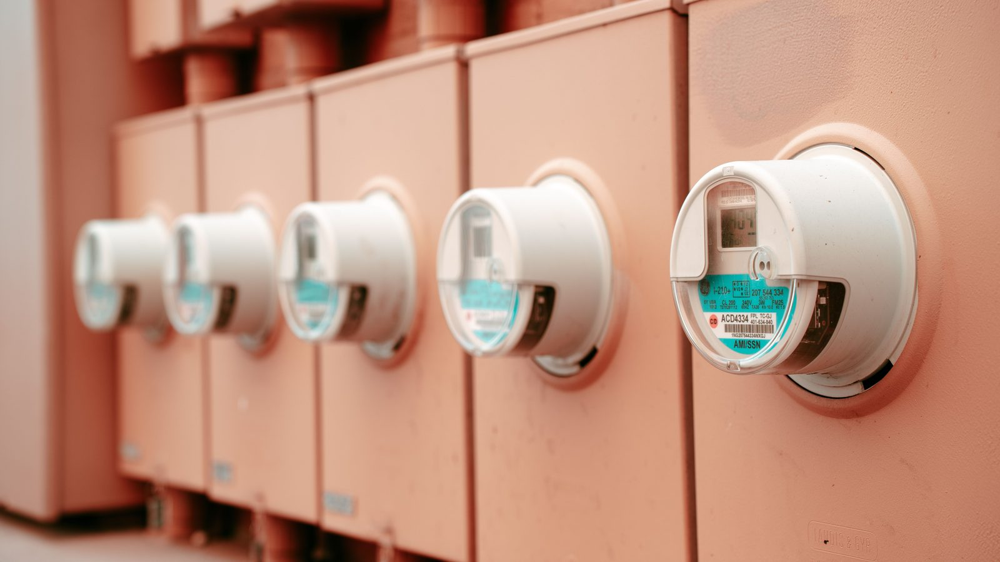

Brasil · Economia
Brasil · EconomiaPrévia da inflação fecha agosto em -0,40%, a maior queda de preços desde 2022
A energia elétrica é um dos itens que puxam o índice.
A Aneel manteve a bandeira amarela pelo quinto mês seguido. O motivo é o período seco, que faz o reservatório render menos e obriga a ligar termelétrica, que gera energia mais cara.
Em 30 segundos · Modo de Leitura, formato original Santa Informa
A Aneel manteve a bandeira amarela em setembro.
É o quinto mês seguido com essa bandeira.
A conta sobe R$ 1,885 a cada 100 kWh consumidos.
O motivo é o período seco no país.
Com menos água, entra mais termelétrica, que custa mais.
Na bandeira verde não há acréscimo nenhum.
Na vermelha patamar 1 são R$ 4,46 a cada 100 kWh.
Na vermelha patamar 2, R$ 7,87.
O sistema de bandeiras existe desde 2015.
A agência lembra que mudança pequena de hábito já reduz consumo.
EconomiaPublicada em Redação Santa Informa

A conta de luz de setembro vem com o mesmo acréscimo da de agosto. A Agência Nacional de Energia Elétrica, a Aneel, informou nesta sexta-feira, 28, que a bandeira tarifária continua amarela no mês que vem. São R$ 1,885 a mais a cada 100 quilowatts-hora consumidos. É o quinto mês seguido nessa faixa.
O motivo é o período seco. Com menos chuva, o reservatório das hidrelétricas rende menos e o sistema precisa acionar as termelétricas, que produzem energia a um custo mais alto. "A sinalização reflete condições menos favoráveis de geração de energia no país", diz a agência. E a recomendação vem junto: "Pequenas mudanças de hábito podem contribuir para reduzir o consumo".
O sistema existe desde 2015 e serve para avisar o consumidor, mês a mês, se está mais caro ou mais barato produzir energia no país. Na verde não há acréscimo. Na amarela, a tabela da Aneel marca R$ 1,88 a cada 100 kWh. Na vermelha patamar 1 sobe para R$ 4,46, e na vermelha patamar 2 vai a R$ 7,87. Amarela é o segundo degrau de quatro, com dois piores acima.
Fazendo a conta, uma casa que gasta 200 kWh no mês paga cerca de R$ 3,77 a mais por causa da bandeira. Olhado sozinho, é pouco. O peso muda no comércio da orla, na padaria e no restaurante que mantêm câmara fria, ar-condicionado e chapa ligados o dia inteiro, e que vão ligar bem mais quando dezembro chegar.
Setembro é o mês em que o litoral começa a se preparar para o verão: contrata gente, testa equipamento e refaz a planilha. Cinco meses seguidos de bandeira amarela quer dizer que esse custo já não é evento passageiro, é linha fixa da conta. Quem for trocar motor de câmara fria ou revisar o ar-condicionado antes da temporada faz isso agora, na baixa, quando dá para desligar o aparelho sem perder venda.
O resumo de 30 segundos está no topo e a versão completa é o texto acima. Aqui ficam as três leituras da casa sobre o mesmo assunto.
Clara, a otimista
Podia ser vermelha, e não é. Amarela é aviso, não castigo, e cinco meses de aviso sem escalar para o degrau de cima significa que o sistema está segurando o rojão do período seco.
E o aviso serve para alguma coisa. Quem olha a bandeira ajusta o chuveiro, troca a lâmpada velha e descobre que a geladeira encostada na parede gasta mais. O bonito do sistema de bandeira é que ele fala antes, e não depois que a conta chegou.
Seu Prudêncio, o criterioso
Merece atenção o fato de serem cinco meses seguidos. Um mês é evento, cinco é patamar. Quem faz orçamento de comércio precisa tratar isso como custo fixo do ano, não como surpresa de meio de ano.
Vale acompanhar o nível dos reservatórios em setembro, porque é ele que decide a bandeira de outubro, e outubro é quando o litoral começa a puxar carga de verdade. Uma sugestão útil para quem tem comércio: medir o consumo equipamento por equipamento agora, na baixa temporada, quando dá para desligar a câmara fria por uma tarde sem perder cliente. Em dezembro não dá.
E é justo reconhecer o outro lado: amarela ainda é o degrau barato da tabela. Entre R$ 1,885 e R$ 7,87 a cada 100 kWh existe uma distância que o caixa sente na hora, e o sistema de bandeira ao menos deixa esse risco visível com antecedência, o que é melhor do que descobrir na fatura.
Caco, o sarcástico
Quinto mês de bandeira amarela. Nessa altura já pode ser considerada a cor oficial da Aneel.
A agência sugere pequenas mudanças de hábito. Comecei apagando a luz do banheiro à noite. A conta continua igual e agora eu bato o dedo mindinho na porta, mas o esforço está sendo feito.
R$ 1,885 a cada 100 kWh. Repare na terceira casa decimal. Na energia eles calculam até o milésimo, mas o troco da padaria continua sendo arredondado para cima.
Fontes: Agência Brasil, reportagem de Luciano Nascimento publicada em 28 de agosto de 2026, às 19h26, com edição de Fernando Fraga, informando a decisão da Aneel de manter a bandeira tarifária amarela em setembro, o acréscimo de R$ 1,885 a cada 100 kWh consumidos, o quinto mês consecutivo nessa faixa, a explicação do período seco com menor geração hidrelétrica e acionamento de termelétricas, as duas frases da agência reproduzidas no texto e a tabela do sistema de bandeiras criado em 2015 (verde sem acréscimo, amarela a R$ 1,88 por 100 kWh, vermelha patamar 1 a R$ 4,46 e vermelha patamar 2 a R$ 7,87). A conta de R$ 3,77 para um consumo de 200 kWh é multiplicação nossa sobre o valor de setembro, e não sai da reportagem. A foto que acompanha a publicação, de Marcello Casal Jr/Agência Brasil, não foi reproduzida aqui.
Brasil · EconomiaA energia elétrica é um dos itens que puxam o índice.
 Brasil · Economia
Brasil · EconomiaOutro prazo de setembro que mexe com o comércio.
 Brasil · Trabalho
Brasil · TrabalhoO outro lado da planilha de quem contrata.